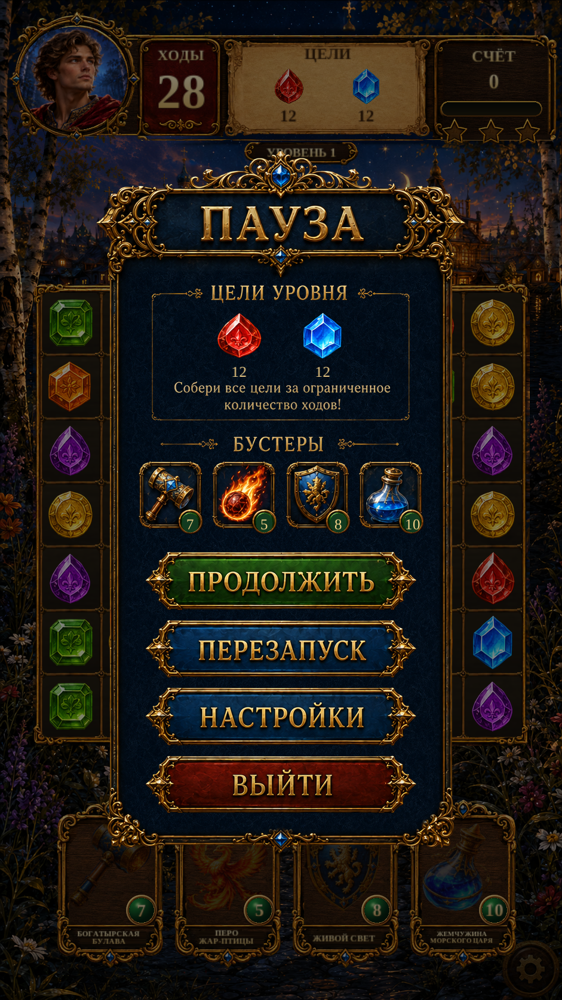

Pause · reference rebuild R1Pause · reference rebuild R1
Continuous navy lacquer, isolated original panel carving and booster cards, original Russian section lettering and restored gold flourishes. The title and four action buttons retain their existing source lettering.
These are actual Unity captures with isolated test saves. The current live Gameplay stays behind the modal. Goals and stock remain live; English uses localizable labels.
